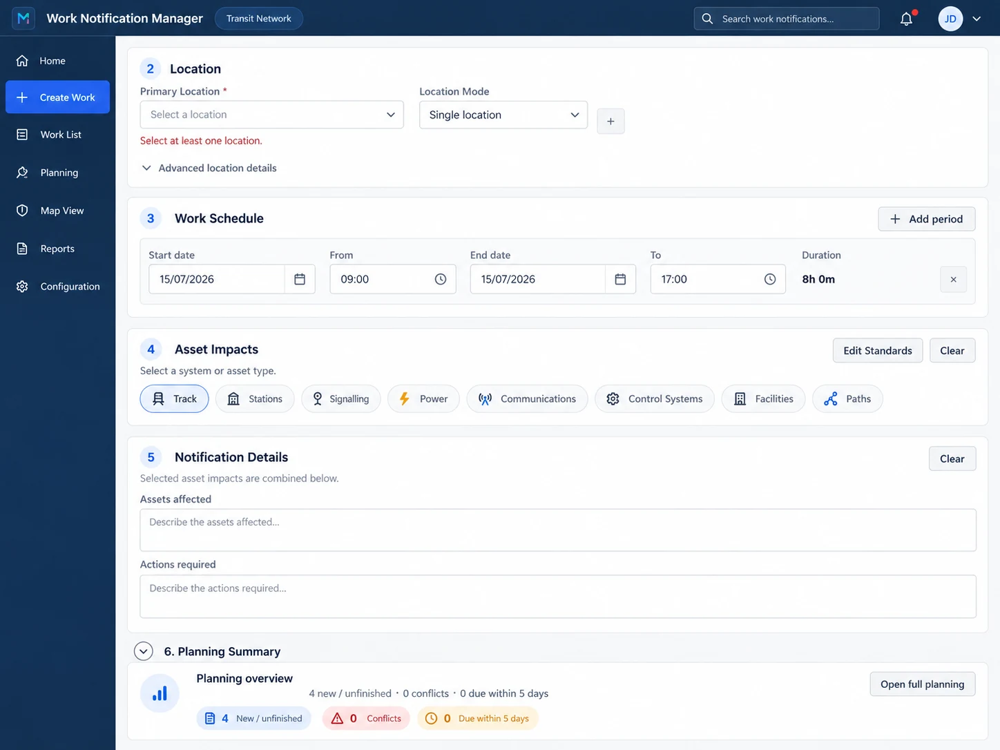
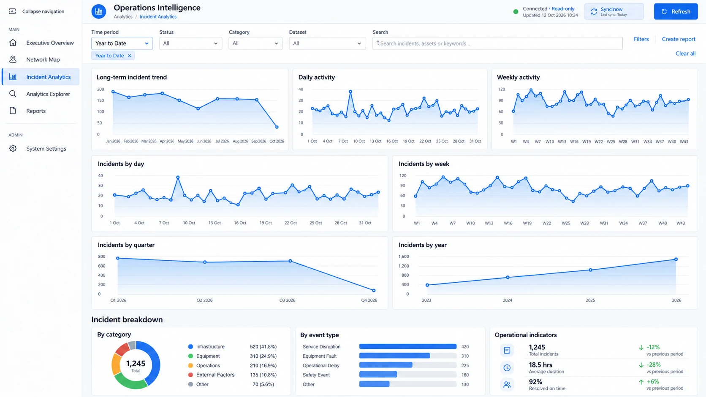
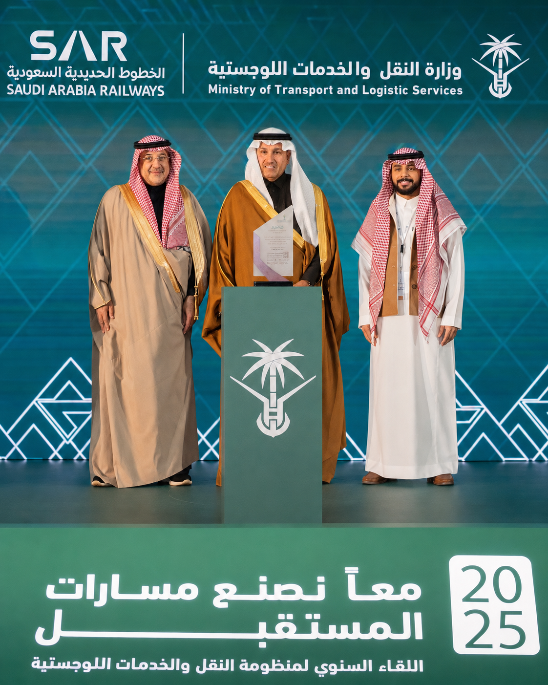
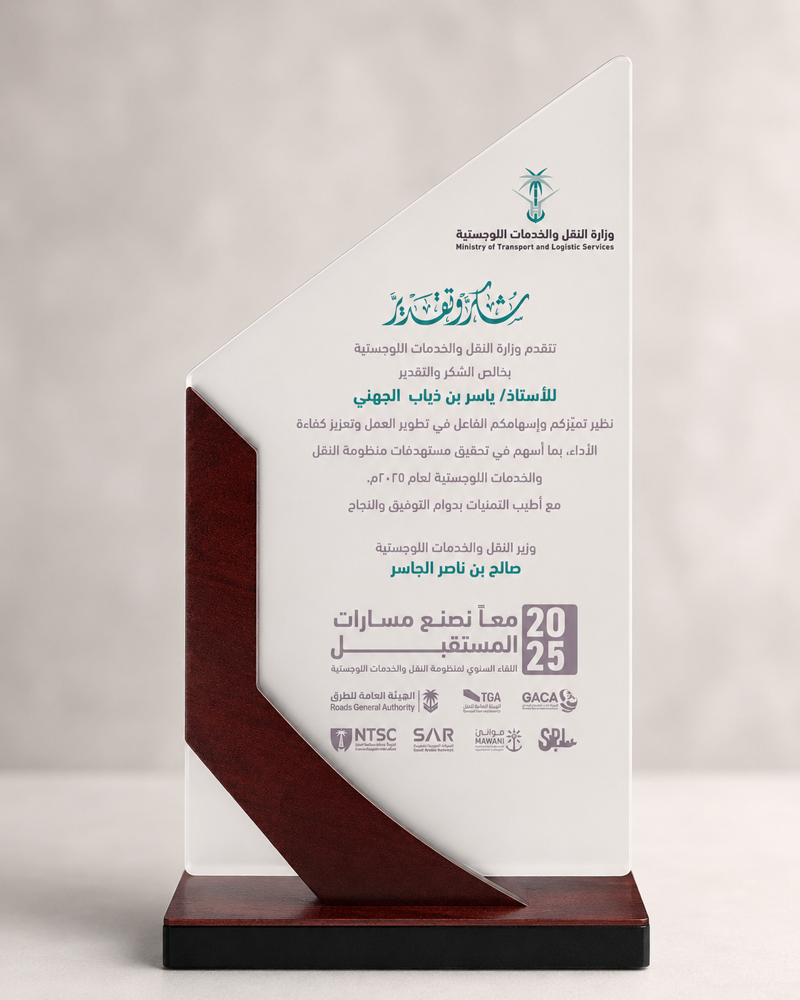
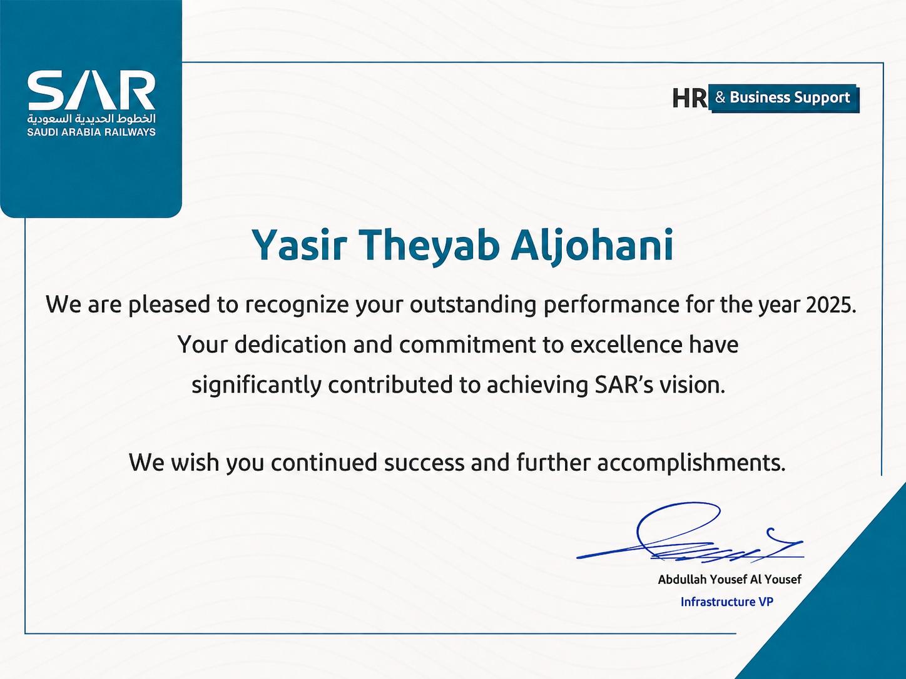

Years across project and infrastructure delivery
PROJECT DELIVERY · TRANSFORMATION · AUTOMATION
Yasir Aljohani
Senior Project Delivery Engineer | PMP® | MiM @ MBSC | Automation & AI
Riyadh, Saudi Arabia
I lead complex infrastructure delivery and operational-readiness work, then use practical governance, data, automation, and AI to make execution faster, clearer, and more reliable.
Project Management Professional
MBSC · Class of 2028
Ministerial Recognition
ABOUT
Delivery first. Technology where it helps.
I came into project delivery through engineering. Working around live operations taught me that strong delivery depends on clear ownership, disciplined interfaces, readiness, and controls that people can actually use.
When repetitive workflows or fragmented data get in the way, I build practical tools around the work—automation, reporting, and decision-support systems that reduce manual handling without replacing the governance behind the process. My MiM at MBSC adds a business and management layer to that technical and delivery foundation.
SELECTED WORK
Digital tools built from real delivery and operational problems.
These are not standalone software experiments. Each started with a recurring workflow or analysis problem I encountered in delivery and operations. Public visuals use fictional data and generic naming.

Workflow Automation
Operations Document Automation Suite
Challenge: A high-volume work-notification process required repeated preparation, validation, planning checks, and controlled outputs.
Built: A C#/.NET desktop application that structures work details, validates inputs, combines infrastructure impacts, tracks planning attention, and supports controlled document output.
Value: Moved a fragmented sequence of manual checks into one governed workflow, reducing repeated handling and making the process easier to review and repeat.

Operational Intelligence
Operations Intelligence Platform
Challenge: Large operational logs made recurring patterns and specific historical events slow to retrieve and compare.
Built: A read-only C#/.NET analytics workspace with synchronized data, structured search, filters, trend views, incident exploration, and reporting.
Value: Made historical records searchable and comparable without changing the source data, so reviews can start from evidence instead of manual log hunting.
RECOGNITION
Recognition grounded in performance.
Recognized in 2025 by the Ministry of Transport and Logistic Services for distinguished contribution, performance development, and strengthening work efficiency in support of the transport and logistics ecosystem.



CAREER CONTEXT
The experience behind the work.
This is the short version. The downloadable CV carries the full role history and detail.
Download full CVSaudi Arabia Railways (SAR)
- Lead infrastructure delivery and operational-readiness activities in live operational environments.
- Coordinate operations, engineering, planning, contractors, approvals, risk, readiness gates, and handover interfaces.
- Build SOPs, reporting improvements, and governed automation where they remove repetitive work or strengthen control.
Planning & HSE Roles
Progressed from part-time HSE coordination into planning engineering, working across production planning, scheduling, constraint management, reporting, and cross-functional coordination.
Engineering Foundation
Supported technical standards, SAP inventory data integrity, procurement activity, and specification review during engineering studies.
FOUNDATION & CAPABILITIES
Management depth built on engineering and delivery.
Education
Master in Management (MiM)Prince Mohammed Bin Salman College (MBSC) · Class of 2028
Bachelor of Mechanical EngineeringApplied Engineering College · First Class Honors · 2021
Associate Degree in Mechanical TechnologyYanbu Industrial College · 2019
Diploma in English LiteratureUniversity of Regina, Canada · 2015
Professional Credentials
PMP®Project Management Institute
View proof C-KPICertified Key Performance Indicators Professional · The KPI Institute
View proof C-SBPCertified Strategy and Business Planning Professional · The KPI Institute
View proof Operations Management TrainingProfessional development · Transport sector
View certificate Capabilities
Delivery & Governance
Project Delivery · PMO & Governance · Operational Readiness · Risk · Stakeholder & Interface Management · SOPs · Project Controls · Primavera P6 · MS Project
Data & Intelligence
Power BI · KPI Development · Reporting · Operational Analysis · Data Quality · Decision Support
Automation & Technology
C# / .NET · Python · Excel / VBA · Workflow Automation · AI-assisted Productivity
Discuss an Opportunity
I am open to senior project delivery, PMO, transformation, operational excellence, and program leadership opportunities across Saudi Arabia and the GCC.